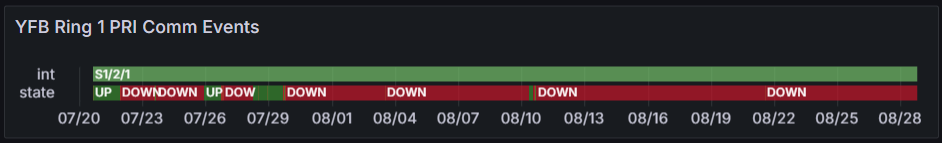

Weekly Highlights 20240821-20240828
8/21 - SZ1 GUS Fault (L1/L5 LNA)
- 8/21 00:33 - SZ1 GUS Faulted from Backup with SEs 197 and 202 L1/L5 LNA Controller Failure; Control Powered and restored to Backup at 8/21 01:33
Third time SZ1 has faulted with SE 197 / 202 since July: 7/25, 8/8, 8/21
8/21 - ZLA Major Comm Event
- 8/21 07:19 - Major comm event at ZLA affecting
both rings for
MR-190899: L3H Tech onsite transition to new FW9500 equip-- ref LIR 844296524; all lines except ZLA-ZTL Ring 1 PRI cleared at 8/21 09:57 (~2h 37m)- Troubleshooting ongoing for ZLA-ZTL Ring 1 PRI...
8/21 - YWG WRE-C Fault
- 8/21 13:24 - YWG WRE-C Faulted with SEs 28, 52, and 53; Control Powered and restored to Normal at 8/21 14:05
- 8/21 20:57 - YWG WRE-C Faulted with SEs 28, 29, 52, 53, and 59; Control Powered and restored to Normal at 8/21 23:13
8/22 - ZLA Comm Event
- 8/22 10:33 - Comm Event at ZLA COR-A affecting a few comms -- troubleshooting for ZLA-ZTL Ring 1 PRI down from 8/21; ref LIR 59279621
8/23 - ZAN WRE-C Bias Error
- 8/23 05:27 - ZAN WRE-C alarmed with SE 729 WRE Bias Err for all C&Vs
- 8/23 06:34 - ZAN WRE-C Reset to clear SE 729 Bias Err -- ref LIR 853379124; restored to Normal at 8/23 07:00
8/24 - ZLC PCU-C Failed
- 8/24 20:29 - ZLC PCU-C failed causing ZLC WRE-C and ZLC Ring 2 down hard -- ref LIR 853762624...
ATSS reports PCU burn smell
- 8/28 03:03 - ZLC WRE-C restored to Maintenance after PCU-C replacement...
8/26 - SZ1 Replaced L-Band Controller Power Supply
- 8/26 16:53 - SZ1 to Maintenance for
scheduled to replace L-Band Controller Power Supply A-- ref LIR 59279721; Control Powered and restored to Backup at 8/26 17:51
8/27 - MMX WRE-A Fault
- 8/27 19:30 - MMX WRE-A Faulted with SEs 28, 29, 52, 53, 59; Reset and restored to Normal at 8/27 20:14
8/28 - YWG WRE-C Faulted
- 8/28 07:59 - YWG WRE-C Faulted with SEs 28, 29, 52, 53, 59; Control Powered and restored to Normal at 8/28 09:18
Various Comm Impacts
* Only captures major / long-term comm outages
Mexico Comms
- 8/21 15:06 - Mexico Ring 1 comms down hard for MMX, MTP, MSD; all lines cleared at 8/22 01:04 (~9h 57m)
- 8/22 07:04 - MSD Ring 1 comms down hard; line cleared at 8/22 09:44 (~2h 39m)
- 8/25 06:04 - MTP Ring 1 comms down hard; line cleared at 8/25 07:44 (~~1h 39m)
- 8/25 12:56 - MMX / MTP / MSD Ring 1 comms down hard; all lines cleared at 8/25 13:05 (~9m)
- 8/28 12:26 - MTP Ring 1 comms down hard -- OFFLINE; line cleared at 8/28 14:46 (~2h 19m)
- 8/28 17:34 - MTP Ring 1 comms down hard -- OFFLINE...
BRW Comms
- 8/22 02:40 - BRW Ring 1 ALT / Ring 2 PRI comms flapping; last events cleared at 8/22 21:53 (~2859 seconds total)
- 8/23 00:54 - BRW Ring 1 ALT / Ring 2 PRI comms flapping; last events cleared at 8/23 01:39 (~330 seconds total)
- 8/26 04:59 - BRW Ring 1 ALT / Ring 2 PRI comms flapping; lines cleared at 8/26 16:17 (~3169 seconds total)
- 8/27 04:32 - BRW Ring 1 ALT / Ring 2 PRI comms flapping; last event cleared at 8/27 18:36 (~5890 seconds total)
Other Sites
- 8/22 17:50 - OTZ Ring 1 ALT comms flapping until down hard at 8/22 18:21 -- OFFLINE; line cleared at 8/22 19:49 (~1h 27m)
- 8/24 09:39 - SZ1 Ring 1 ALT + CM1 Ring 2 PRI comms down hard; both lines cleared at 8/24 16:34 (~6h 54m)
- 8/26 23:49 - SZ1 Ring 1 ALT + CM1 Ring 2 PRI comms down hard; both lines cleared at 8/27 04:10 (~4h 21m)
SSM-WAAS-066 Circuits Outstanding
- OTZ - Following circuits delivered
/ SA'd -- Circuit Validation
target week of
9/16/2024
- Ring 1 PRI to ZAU - FTIH-WS-053504
- Ring 2 PRI to ZLA - FTIH-WS-053508
- Ring 2 ALT to ZLA - FTIH-WS-053509
- BRW - Ring 2 ALT to ZLA -
FTIH-WS-053531
- 5/23 17:35 - BRW Ring 2
ALT comms down
hard --
ISR 0521-0090; ref LIR 802755624 - Router replacement did not clear issue; Troubleshooting will continue week of 9/16...
- 5/23 17:35 - BRW Ring 2
ALT comms down
hard --
YFB Ring 1 PRI
- 7/29 17:01 - YFB Ring 1 comms flapping then down hard at 7/29 19:10; loopback testing at 7/30 04:06...
- 7/31 05:08 - YYR Ring 1 down hard + loopback testing impacting YYR Ring 1 and YFB Ring 1 to troubleshoot YFB Ring 1 comms down since 7/29; last event for YYR Ring 1 cleared at 7/31 09:41 (~16389 seconds) -- YFB Ring 1 still down hard...
- 8/10 04:09 - YFB Ring 1 comms UP temporarily; started flapping again at 8/10 08:27 then down hard at 8/10 11:29...

List of current offline WREs
List of current offline WREs -- ref WAAS Status Monitor
All Depot shipments to Mexico are halted until the customs process can be finalized
- MMX WRE-C - 5/15-... - Processor failed and could not be restored
- MPR WRE-B - 5/3-... - Inits failing -- looks like a bad freq std; due to shipping issues, there is no spare Freq Std and no ETA to recover WRE-B...
5/11/23-... - MX Ring 2 Satcom Upgrade
MX WAAS Sites comm upgrades in progress:
- 6/5 - Troubleshooting at ZLA-Tijuana shows 4 of 5 circuits have a telco issue localized to Tijuana that must be resolved by FTI; for the MSD circuit, Tijuana could see a loop from ZLA, but ZLA could not see the loop locally -- possible cable issue at ZLA
- Frequentis coordinating with SENEAM at TJX to complete end-to-end testing from remote site to TJX
- After successful testing to TJX; comms should come up at ZLA (if not, coordinate with FTI Harris)
- MMX Ring 2 is currently up, but zero UDP packets are coming through
- MMD Ring 2 is currently up, but zero UDP packets are coming through

Major Events


Comm Events

Mexico Comm Status